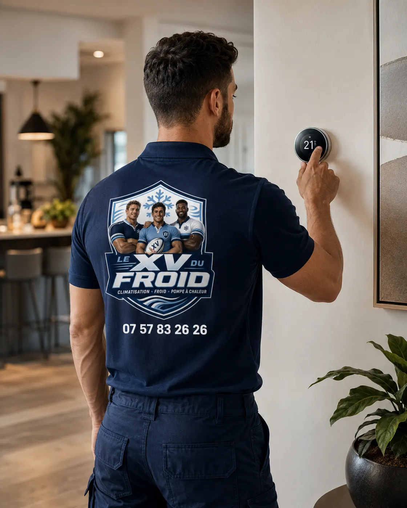

Le Pecq · 78230 · redémarrage après arrêt
Dépannage climatisation Le Pecq : quand l’appareil, éteint pendant les vacances, ne repart pas.
Vous rentrez de vacances au Pecq, il fait chaud, vous appuyez sur la télécommande, et rien ne vient comme prévu. Un appareil resté éteint des semaines ne repart pas toujours aussi bien qu’il s’était arrêté. Voici ce qui se passe, ce que vous pouvez contrôler et quand il vaut mieux appeler.
- Pannes de redémarrage les plus courantes
- Les contrôles à faire avant de rallumer
- Quand arrêter et appeler

Retour de vacances
Un appareil arrêté longtemps a ses propres pannes.
Pendant un arrêt de quelques semaines, l’eau stagne dans le bac, la poussière se dépose sur le filtre et sur les ailettes, et des insectes s’installent parfois dans l’évacuation. Rien de grave en soi, mais le premier démarrage révèle ces petits défauts d’un coup.
Les gens qui nous contactent pour un dépannage climatisation Le Pecq au retour de congés décrivent presque toujours les mêmes choses : une odeur de renfermé, un peu d’eau qui goutte, un souffle tiède, ou un disjoncteur qui déclenche.
Ces symptômes ont des causes différentes. Les distinguer évite de mauvaises manipulations.

Quatre contrôles avant de remettre en marche
Regardez d’abord le filtre : s’il est couvert de poussière, rincez-le et laissez-le sécher. Passez un chiffon sous l’unité pour voir si de l’eau s’est accumulée. Vérifiez que la grille du groupe extérieur est dégagée, sans feuilles ni toile d’araignée.
Remettez ensuite le disjoncteur dédié, puis lancez l’appareil en mode froid à une consigne basse. Laissez-le tourner dix minutes avant de juger.
- Filtre rincé et sec
- Dessous de l’unité vérifié
- Grille extérieure dégagée
- Essai de dix minutes
Les symptômes
Ce que veulent dire les signes du redémarrage
Les causes sont souvent bénignes, mais pas toujours.
- Odeur de renfermé : filtre ou bac à nettoyer, parfois évaporateur à traiter.
- Un peu d’eau qui goutte : évacuation obstruée par la poussière ou un insecte.
- Souffle tiède : filtre colmaté, mode incorrect ou, plus rarement, manque de fluide.
- Disjoncteur qui déclenche : à ne pas forcer, un défaut est à chercher.
- Bruit de cliquetis au démarrage : ventilateur encrassé ou condensateur fatigué.
Notre avis
Un nettoyage suffit-il ?
Dans la moitié des cas environ, oui : filtre, bac et évacuation expliquent les symptômes. Nous préférons vous guider au téléphone pour ces gestes que vous déplacer pour dix minutes de travail.
Si un défaut persiste après le nettoyage, nous passons et nous cherchons la cause réelle plutôt que de recharger ou de remplacer au hasard.
Nous ne rechargeons pas en gaz sans avoir cherché une fuite : sans réparation, la charge repart.
Au téléphone
Ce que nous demandons à l’appel
Pour un depannage clim Le Pecq après des vacances, dites-nous combien de temps l’appareil est resté éteint, s’il avait été vidangé ou protégé, et ce qu’il fait au démarrage. La durée d’arrêt oriente déjà notre première hypothèse.
Donnez aussi la marque et l’âge approximatif. Un appareil récent a des sécurités qui affichent un code ; un plus ancien plante sans rien dire.
Délais
Ce que nous pouvons dire honnêtement
Nous faisons au plus vite. Appelez le matin pour un créneau rapide, surtout en période de retour de vacances où beaucoup d’appareils sont rallumés le même jour.
Si une pièce doit être commandée, nous vous donnons le délai probable dès le diagnostic, sans engagement chiffré avant d’avoir vérifié le stock.
Questions
Climatisation qui ne repart pas au Pecq : vos questions
Mon appareil sent mauvais au premier démarrage, c’est grave ?
Pas en général. Rincez le filtre, séchez, aérez. Si l’odeur persiste après un jour de fonctionnement, appelez-nous.
De l’eau goutte alors que je viens de le rallumer ?
L’évacuation est probablement obstruée. Posez un récipient dessous et ne touchez à rien de plus si l’eau reste claire.
Dois-je vidanger l’appareil avant de partir ?
Pour un mobile, oui. Pour un split, rincez le filtre et laissez-le sécher, c’est suffisant.
Peut-on laisser la clim en veille l’été ?
Oui, cela évite un redémarrage à froid, mais ce n’est pas indispensable.
Combien de temps avant de juger si ça refroidit ?
Une dizaine de minutes en mode froid, consigne basse, volets fermés.
Dois-je être présent ?
Oui, au moins au début, pour l’accès et pour décrire ce que l’appareil fait.
Dans votre ville
Les autres services à Le Pecq
Un besoin différent, une page différente : dépannage, entretien, installation ou urgence.
Autour de chez vous
Dépannage de climatisation dans les villes voisines
Si vous êtes à la limite de deux communes, lisez aussi la page d’à côté.
- Dépannage climatisation Le Vésinet : reprendre une installation posée par un autre
- Dépannage climatisation Saint-Germain-en-Laye : code erreur et pannes courantes
- Dépannage climatisation Chambourcy : la clim d’une véranda qui surchauffe
- Dépannage climatisation Croissy-sur-Seine : les pannes de juillet
- Dépannage climatisation Chatou : bruits, vibrations et ventilateur qui racle
- Dépannage climatisation Marly-le-Roi : multi-split, quelle unité est en cause
- Dépannage climatisation Carrières-sur-Seine : groupe qui givre et vapeur en mode chauffage
- Dépannage climatisation Mareil-Marly : voyant qui clignote et code erreur, le lire avant d’appeler
- Dépannage climatisation Montesson : les questions posées avant la visite
À côté
D’autres besoins dans les communes voisines
Chaque ville a ses pages.
Nos services
Aller plus loin sur la climatisation
Les pages du site qui complètent celle-ci : services, guides pratiques et devis.
- Dépannage climatisation en Île-de-France
- Installation de climatisation : split, gainable, monobloc
- Entretien de climatisation et de clim réversible
- Demander un devis climatisation gratuit
- Toutes nos zones d’intervention
- Fuite d’eau d’un climatiseur : causes et solutions
- L’entretien de la climatisation est-il obligatoire ?
Où on intervient
Le Pecq et ses voisines
Le centre, les bords de Seine, les résidences et les rues pavillonnaires, ainsi que Saint-Germain-en-Laye, Le Vésinet, Montesson, Croissy-sur-Seine et Le Port-Marly.
Demander un dépannage au PecqÀ lire aussi
Autour du Pecq
Pages voisines : dépannage Le Vésinet, dépannage Saint-Germain-en-Laye.
Transparence
Un devis clair avant toute intervention.
Vous savez ce qui est prévu, pourquoi c’est nécessaire et à quel tarif avant que le technicien commence. Puis contrôles et essais avant son départ.